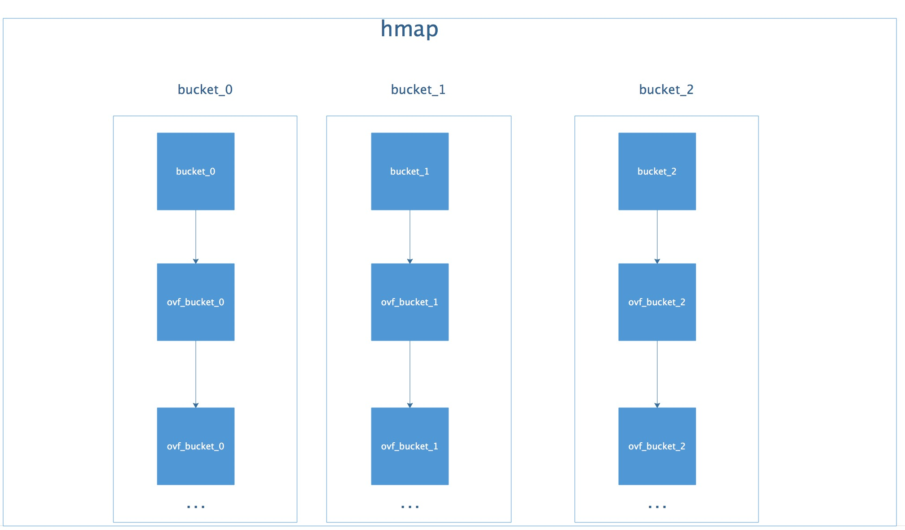

转载《解剖Go语言map底层实现》
附在文章开头
这篇博客对map底层解释的很详尽，在之前我也只是了解map、字典这类结构底层是散列表，但并不清楚其内部实现的机理，这篇博客算是让我对其底层有更多的了解了。
另外，在Go的使用，或更多的在面试中，经常会被问到的一个问题是，map是否是有序的，若无序，则为什么无序？
首先map数据的存储是无序的，Go map遍历输出是无序的，那么也就是说有一些语言的遍历输出是有序的么？
map其底层为散列表，k-v结构，分布顺序与插入顺序没什么联系，但在实际使用中，散列表在整体插入完成后，其key顺序是固定的，所以在以后的遍历中，访问key的顺序是一致的。
Go官方明确告诉开发者其map结构遍历输出无序，那什么机制导致其无序呢，查询资料后发现，for range map 在开始处理循环逻辑时，Go并不是在固定位置上进行遍历，其是随机的，那也就是其起始位置都不固定，遍历顺序肯定会不固定了。
map是Go语言中基础的数据结构，在日常的使用中经常被用到。但是它底层是如何实现的呢？
map的底层
Golang中map的底层实现是一个散列表，因此实现map的过程实际上就是实现散表的过程。在这个散列表中，主要出现的结构体有两个，一个叫hmap(a header for a go map)，一个叫bmap(a bucket for a Go map，通常叫其bucket)。这两种结构的样子分别如下所示：
hmap:

图中有很多字段，但是便于理解map的架构，你只需要关心的只有一个，就是标红的字段：buckets数组。Golang的map中用于存储的结构是bucket数组。而bucket(即bmap)的结构是怎样的呢？
bucket：

相比于hmap，bucket的结构显得简单一些，标红的字段依然是“核心”，我们使用的map中的key和value就存储在这里。“高位哈希值”数组记录的是当前bucket中key相关的“索引”，稍后会详细叙述。还有一个字段是一个指向扩容后的bucket的指针，使得bucket会形成一个链表结构。例如下图：

由此看出hmap和bucket的关系是这样的：

而bucket又是一个链表，所以，整体的结构应该是这样的：

哈希表的特点是会有一个哈希函数，对你传来的key进行哈希运算，得到唯一的值，一般情况下都是一个数值。Golang的map中也有这么一个哈希函数，也会算出唯一的值，对于这个值的使用，Golang也是很有意思。
Golang把求得的值按照用途一分为二：高位和低位。

如图所示，蓝色为高位，红色为低位。
然后低位用于寻找当前key属于hmap中的哪个bucket，而高位用于寻找bucket中的哪个key。上文中提到：bucket中有个属性字段是“高位哈希值”数组，这里存的就是蓝色的高位值，用来声明当前bucket中有哪些“key”，便于搜索查找。
需要特别指出的一点是：我们map中的key/value值都是存到同一个数组中的。数组中的顺序是这样的:

并不是key0/value0/key1/value1的形式，这样做的好处是：在key和value的长度不同的时候，可以消除padding带来的空间浪费。
现在，我们可以得到Go语言map的整个的结构图了：

map的扩容
当以上的哈希表增长的时候，Go语言会将bucket数组的数量扩充一倍，产生一个新的bucket数组，并将旧数组的数据迁移至新数组。
加载因子
判断扩充的条件，就是哈希表中的加载因子(即loadFactor)。
加载因子是一个阈值，一般表示为：散列包含的元素数 除以 位置总数。是一种“产生冲突机会”和“空间使用”的平衡与折中：加载因子越小，说明空间空置率高，空间使用率小，但是加载因子越大，说明空间利用率上去了，但是“产生冲突机会”高了。
每种哈希表的都会有一个加载因子，数值超过加载因子就会为哈希表扩容。
Golang的map的加载因子的公式是：
1 | map长度 / 2^B |
阈值是6.5。其中B可以理解为已扩容的次数。
当Go的map长度增长到大于加载因子所需的map长度时，Go语言就会将产生一个新的bucket数组，然后把旧的bucket数组移到一个属性字段oldbucket中。注意：并不是立刻把旧的数组中的元素转义到新的bucket当中，而是，只有当访问到具体的某个bucket的时候，会把bucket中的数据转移到新的bucket中。
如下图所示：当扩容的时候，Go的map结构体中，会保存旧的数据，和新生成的数组

上面部分代表旧的有数据的bucket，下面部分代表新生成的新的bucket。蓝色代表存有数据的bucket，橘黄色代表空的bucket。
扩容时map并不会立即把新数据做迁移，而是当访问原来旧bucket的数据的时候，才把旧数据做迁移，如下图：

注意：这里并不会直接删除旧的bucket，而是把原来的引用去掉，利用GC清除内存。
map中数据的删除
如果理解了map的整体结构，那么查找、更新、删除的基本步骤应该都很清楚了。这里不再赘述。
值得注意的是，找到了map中的数据之后，针对key和value分别做如下操作：
1 | 1、如果``key``是一个指针类型的，则直接将其置为空，等待GC清除； |
本文标题：转载《解剖Go语言map底层实现》
文章作者：小师
发布时间：2019-06-19
最后更新：2022-05-04
原始链接：chunlife.top/2019/06/19/转载《解剖Go语言map底层实现》/
版权声明：本站所有文章均采用知识共享署名4.0国际许可协议进行许可